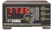

MKS PDR2000 Controller



The MKS Instruments Model PDR 2000 Dual Capacitance Diaphragm Gauge (CDG) Controller displays vacuum pressure as measured from capacitance diaphragm gauges. The PDR 2000 supplies +\-15 volts at up to 0.75 amp; this is sufficient to operate most heated capacitance diaphragm gauges. The PDR 2000 measures the 0 to 10 volt signal from the CDG to determine pressure. The Model PDR 2000 controller covers full scale ranges from 20 mTorr to 10,000 Torr. See the manual for more info.

Select the RS-232 port and open/close the connection
Set up a polling interval for reading the pressures

Pressures can optionally be inserted into the data stream
The last measured pressure and the time the measurement was made
Strip chart of the pressures over time. Note that you can set the scale factor also.
Pressure data record:
xxxx xxxx xxxx xxxx xxxx xxxx xxxx xxxx
^^^^ ^^^^ ^^^^ ^^-----------------------data id
^^ ^^^^ ^^^^ ^^^^ ^^^^-length in longs
xxxx xxxx xxxx xxxx xxxx xxxx xxxx xxxx
^^^^ ^^^^ ^^^^- device id
^^^^ -------------------- units, (0=unknown,1=Torr,2=mBar,3=Pascal,4=Arb)
xxxx xxxx xxxx xxxx xxxx xxxx xxxx xxxx pressure chan 0 encoded as a float
xxxx xxxx xxxx xxxx xxxx xxxx xxxx xxxx time pressure 0 taken in seconds since Jan 1, 1970
xxxx xxxx xxxx xxxx xxxx xxxx xxxx xxxx pressure chan 1 encoded as a float
xxxx xxxx xxxx xxxx xxxx xxxx xxxx xxxx time pressure 1 taken in seconds since Jan 1, 1970